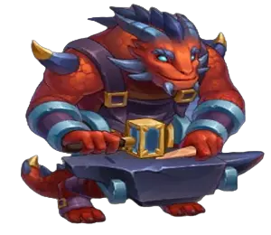

S+ Tier List Hero Wars 2025 JvJ
Os heróis de nível S+ são considerados os personagens de melhor desempenho no jogo. Eles têm excelente sinergia com a maioria das composições de equipe, oferecem vantagens significativas nas batalhas e frequentemente possuem habilidades únicas que podem mudar o rumo de uma luta. No entanto, eles podem ter algumas desvantagens menores que vale a pena notar.
Os heróis estão listados em ordem alfabética para cada ranque
Aidan

Tier List: S+
Prós:
- Alta produção de dano.
- Excelentes habilidades de sacrifício com cura e escudo.
- Forte sinergia com outros heróis de alto dano.
Contras:
- Defesa relativamente baixa.
- Vulnerável a danos explosivos.
Astaroth

Tier List: S+
Prós:
- Tanque forte com alta defesa.
- Pode proteger aliados, fornecendo proteção adicional.
- Eficaz na absorção de dano físico.
Contras:
- Produção de dano limitada.
- Dependente do suporte da equipe para máxima eficácia.
Corvus

Tier List: S+
Prós:
- Alto dano com a habilidade Altar das Almas.
- Pode reduzir todas as defesas dos inimigos.
- Forte contra inimigos que causam dano em área (AOE).
Contras:
- Velocidade de ataque lenta.
- Vulnerável a ataques de alvo único na linha de frente.
Dante

Tier List: S+
Prós:
- Alta produção de dano físico.
- Pode desviar de ataques, aumentando a sobrevivência.
- Bom para interromper a linha de frente inimiga.
Contras:
- Vulnerável a habilidades de controle de multidão.
Fafnir
Tier List: S+
Prós:
- Aumenta o potencial de dano de ataque físico dos aliados.
- Pode desativar habilidades inimigas com atordoamento.
- Forte tanto na ofensiva quanto na defensiva, fornecendo escudo para aliados.
Contras:
- Requer tempo preciso para dano máximo.
- Vulnerável a controle de multidão.
Iris

Tier List: S+
Prós:
- Habilidade Over-Power que causa dano a todos os inimigos.
- Reduz o ataque físico e mágico dos inimigos que aplicam debuffs.
- Imune a debuffs
Contras:
- Requer proteção dos aliados devido à baixa defesa.
Julius

Tier List: S+
Prós:
- Alta defesa e sobrevivência com escudo.
- Pode remover debuffs dos aliados.
- Tanque com habilidade de cura.
Contras:
- Baixa armadura e defesa mágica.
Kayla

Tier List: S+
Prós:
- Kayla causa dano puro significativo, ignorando as defesas inimigas.
- Ela tem habilidades que lhe permitem se curar, aumentando sua sobrevivência nas batalhas.
- Kayla pode ressuscitar seu irmão Aidan, proporcionando uma vantagem significativa durante lutas difíceis.
Contras:
- Vulnerável a controle de multidão.
- Requer tempo preciso para dano máximo.
Lara Croft

Tier List: S+
Prós:
- Forte produção de dano à distância.
- Múltiplos bônus de artefato: ataque mágico, armadura, defesa mágica, penetração de armadura, penetração mágica, chance de golpe crítico, esquiva.
Contras:
- Ela é uma heroína muito cara pelo pouco que entrega nas batalhas.
- Requer posicionamento cuidadoso e sinergia para maximizar a eficácia.
Nebula
Tier List: S+

Prós:
- Pode aumentar o poder de ataque dos aliados.
- Fornece algum suporte de cura.
- Boa sinergia com heróis de alto dano.
Contras:
- Baixo dano pessoal e defesa.
- Requer proteção dos aliados.
Octavia

Tier List: S+
Prós:
- Forte produção de dano mágico com seu espelho.
- Pode buffar aliados com esquiva extra e penetração de armadura.
Contras:
- Baixa defesa.
Oya

Tier List: S+
Prós:
- Alta mobilidade e velocidade de ataque.
- Cura aliados que destroem escudos ou fazem acertos críticos.
- Forte em batalhas de equipe contra times com escudo.
Contras:
- Vulnerável a danos explosivos.
Polaris

Tier List: S+
Prós:
- Controle em área extremamente forte com stun.
- Sinergia com facção do Progresso.
- Grande potencial de dano crítico mágico.
Cons:
- Alta dependência de sinergiase.
- Vulnerabilidade a anti-controle.
- Skins insuficientes para aumentar o poder.
Soleil

Tier List: S+
Prós:
- Pode aumentar o poder de ataque e a cura dos aliados.
- Reduz as defesas dos inimigos.
- Bom contra heróis com habilidades de controle.
Contras:
- Baixo dano e defesa.
- Muito caro e difícil de farmar.
- Skins insuficientes para aumentar o poder.
Tristan

Tier List: S+
Prós:
- Alta produção de dano físico.
- Pode aumentar o poder de ataque dos aliados com sua habilidade e artefato de penetração de armadura.
- Eficaz contra alvos com alta penetração mágica.
Contras:
- Vulnerável a ataques mágicos.
Tempus

Tier List: S+
Prós:
- Alto potencial de buff de dano para Iris e Dante.
- Capaz de aumentar as penalizações que os aliados aplicam nos inimigos.
- Capaz de prolongar as penalizações que os aliados aplicam nos inimigos.
Contras:
- Vulnerável a ataques físicos.
Yasmine

Tier List: S+
Prós:
- Alta chance de acerto crítico.
- Pode evitar ataques inimigos, aumentando a sobrevivência.
- Forte contra alvos únicos.
Contras:
- Vulnerável a habilidades de controle de multidão.


 Analise Visual Angelical
Analise Visual Angelical